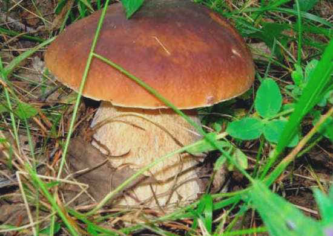
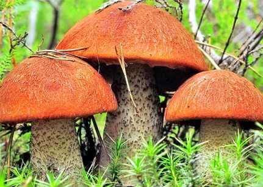
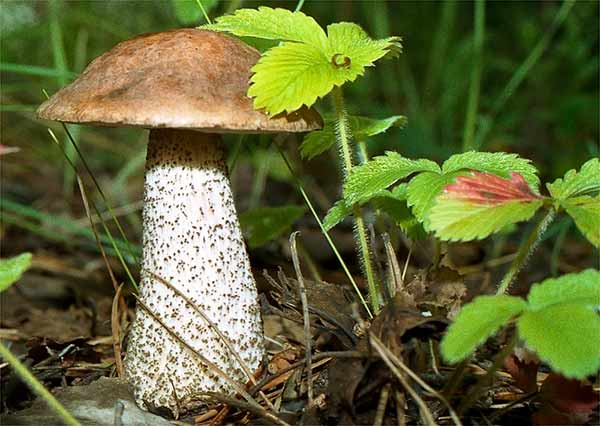

Классификация
Все грибы делят на три основных раздела: съедобные, условно-съедобные, несъедобные (ядовитые, галлюциногенные). Все это шляпочные грибы, они составляют лишь малую часть обширного царства.
Их можно поделить по многим критериям. Наибольшее значение для нас имеет строение шляпки, так как иногда у двойников оно отличается.
- трубчатые (губчатые) – низ шляпки состоит из мельчайших трубочек, напоминает губку;
- пластинчатые – пластинки внизу шляпки, расположенные радиально;
- сумчатые (сморчковые) – шляпки сморщенные.
Как выглядят съедобные грибы

Белый гриб (боровик)
Грибной король имеет светлую ножку, губка под шапкой имеет кремовый и белый цвет. Если надломить шляпку, она не потемнеет. У него несколько ложных и ядовитых близнецов. Например, у сатанинского гриба надлом посинеет, а у желчного порозовеет, сломанная ножка покроется темной сеткой.

Подосиновик (красноголовик)
В большинстве случаев подосиновик имеет красную шапку, плотную мякоть и ножку. При надломе срез синеватый или белый, а у ложного красноголовика красный или розовый.

Подберезовик (обабок)
Цвет шляпки различают от темно-коричневого до светло-бежевого. Березовик имеет вытянутую ножку с сеткой серого цвета, а при срезе не меняет цвет. Ложный гриб имеет грязную белую или розовую губку, а шляпа у него серая или розоватая.